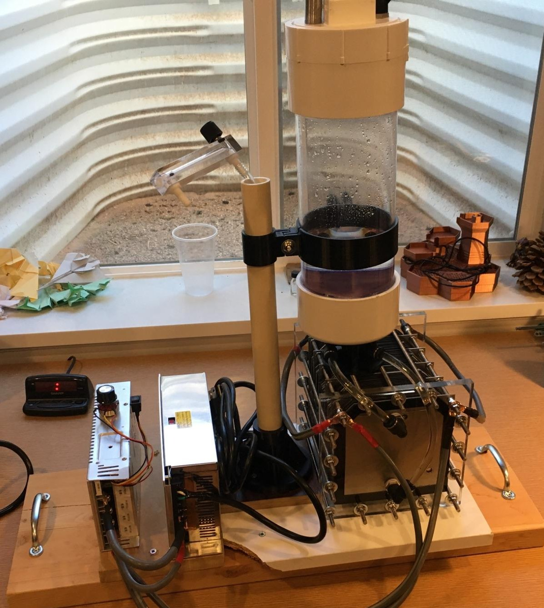
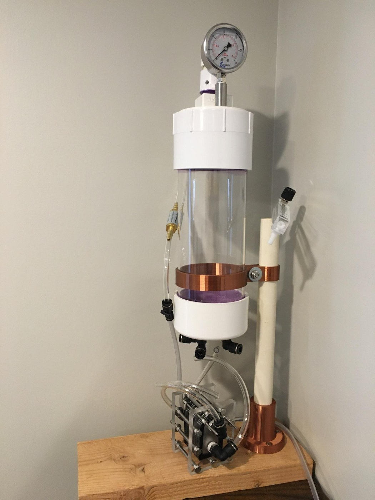
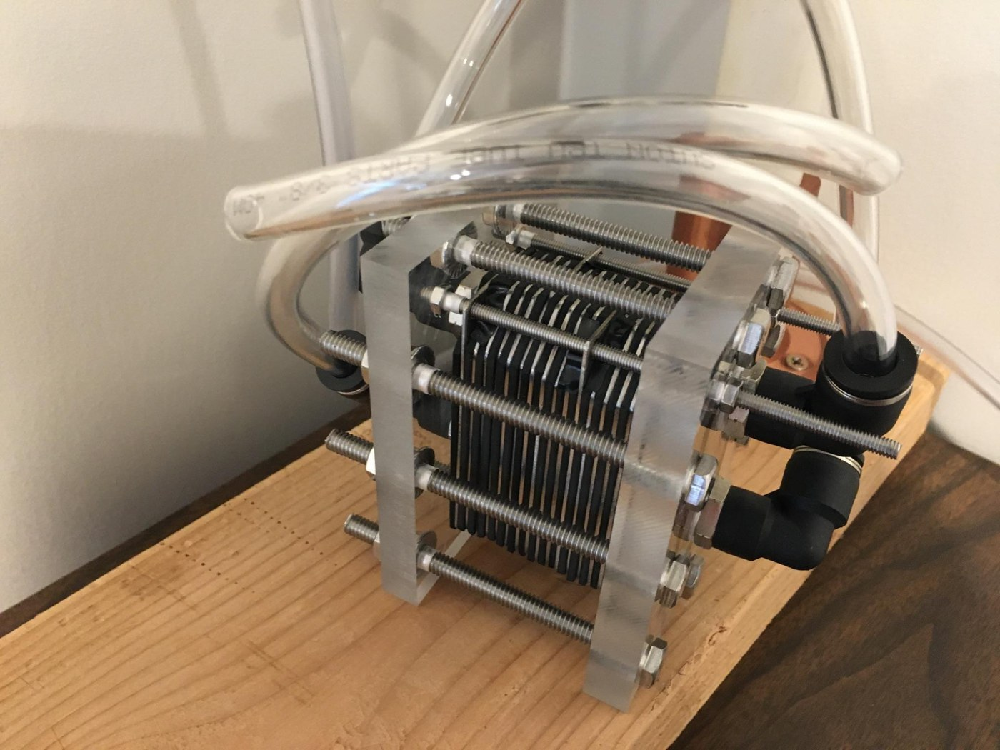

Dry Cell Hydrogen Generator


- I started this hydrogen generator mainly to power a hydrogen-oxygen torch for metalworking and knife building, and also as a summer project between my junior and senior year of high school. I researched electrolysis for a couple of months, then started building.
- I ran into many problems. As I learned more, I made better decisions and found the parts and materials for a working generator.
- After a few prototype tests, I made a 16-cell generator. Once that worked as expected, I built a much larger generator that used 30 pounds of 321 stainless steel and runs on a 12-volt, 100-amp power supply with a pulse-width modulator driving the reaction.
- I started knowing almost nothing about the science behind electrolysis. I had to learn and stretch to reach the goal.